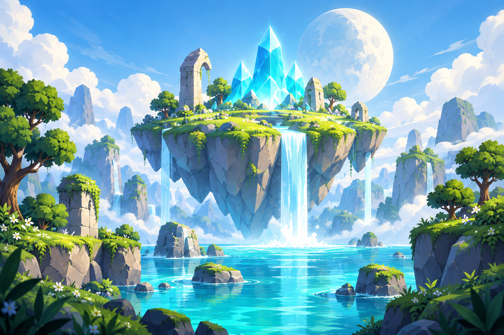

FURIESURVIVORSLES TERRES
D’AZUR
D’AZUR
LES TERRES D’AZUR

L’aventure t’appelle.
Explore. Survis. Deviens une légende.
4 RÉGIONS
PRÊT POUR L’AVENTURE
✧
Chaque expédition fait grandir ta légende.
DES VISAGES. MILLE FAÇONS DE JOUER.
3 / 32Ta constellation de héros.
32 héros · 20 familles d’armes · des talents propres.
LE RITUEL DES ÉCLATSUne étoile.
Une étoile.
Une nouvelle histoire.
Les éclats trouvés en expédition éveillent de nouveaux compagnons. Une nouvelle attaque, une nouvelle façon de survivre.
Un doublon donne des essences pour recruter le héros de ton choix.
Probabilités et garanties
Probabilités des tirages standards. La première invocation garantit un nouveau héros. Après 9 tirages sans nouveauté, le suivant donne un héros manquant. Pour un tirage garanti, les chances sont recalculées parmi les raretés encore manquantes. La rareté renforce les statistiques de base. Le profil et le talent de chaque héros définissent ses forces ; sa fiche affiche les valeurs réelles.
L’AVENTURE LAISSE UNE TRACE
Les traces de ta légende.
Les petites victoires
Récompenses récupérées automatiquementNIV. 1
100 / 100
ZQSD / WASD · ESPACE esquive · M carte
BOUGER
ESQUIVE